This exam covers three topics: Motion and Forces, Genetics and Evolution and Origins of the Universe. Section A is multiple choice and Section B is short answer.
Section A: Multiple choice (25 marks)
Motion and Forces
Joe was riding his bike on Mont Albert Road at 18 km/h. Convert his speed to m/s.
18 ÷ 3.6 = 5.0 m/s.
Shawya and Kamran are running while passing a football between them. They run the length of the oval, then turn around and run halfway back. The magnitude (size) of their displacement at the end will be:
Questions 3 and 4 relate to the following information.
James rolls a dynamics trolley down a ramp. A ticker timer makes a mark on a piece of ticker tape at the rate of 1 dot every 0.02 seconds.
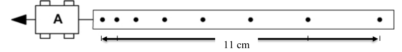
As time goes forward, the trolley is:
Calculate the approximate average velocity of the trolley over the whole time period shown, in cm/s.
There are 7 gaps between the 8 dots: t = 7 × 0.02 = 0.14 s. v = 11 ÷ 0.14 = 79 cm/s.
Questions 5–7 relate to the displacement–time graph below.
Jake is practising for the House Diving competition. He climbs the stairs and waits briefly at the top of the diving board, before diving into the water.
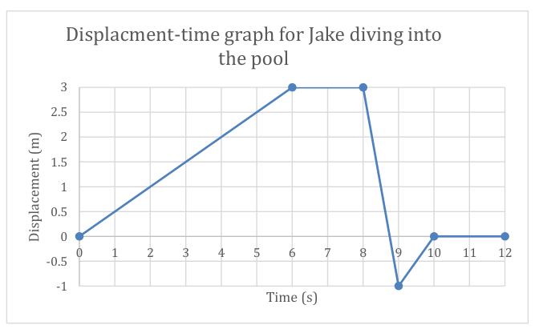
In what time period is Jake waiting at the top of the diving board?
Calculate Jake's velocity during the time period 8–9 s.
v = Δx / Δt = (−1 − 3) ÷ 1 = −4 m/s.
Jake's displacement at 9.0 s is negative. What does this suggest about his position?
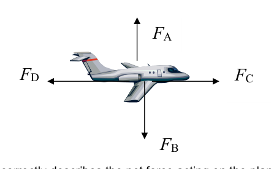
An aeroplane is moving forward with a constant velocity. It is travelling at a constant altitude: it is neither climbing nor descending. Which of the following correctly describes the net force acting on the plane?
Constant velocity means zero acceleration, so the forces are balanced.
Jack holds a balloon filled with water over the railings of M building. The balloon has a mass of 2.0 kg and is 4.0 m above the ground. Jack then drops the balloon. Calculate the weight of the balloon.
W = mg = 2.0 × 9.8 = 19.6 N.
Genetics and Evolution
Meiosis is an important cellular process because it creates
If two white sheep produce a black offspring, the parents' genotypes for colour must be:
Which blood type would not be possible for children of a type AB mother and a type A father?
The mother has no i allele to pass on, so no child can be ii (type O).
Which of the following could represent a genotype?
In fruit flies, sex is determined by X and Y chromosomes just as in humans. Eye colour is X-linked, and red eye colour is dominant to white. Which of the following is not possible in a cross between a red-eyed male and a heterozygous female?
Every daughter gets the father's XR, so no daughter can be white-eyed.
Which of the following terms describes a heritable characteristic that increases an organism's ability to survive and reproduce in its environment?
The diagrams below represent sedimentary rock strata from two different palaeontological sites.
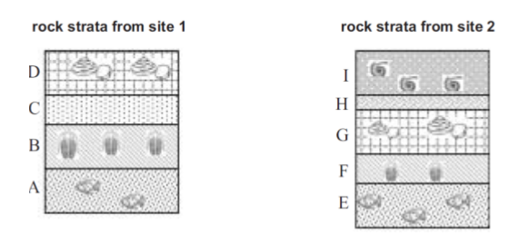
Based on these diagrams, it would be reasonable to conclude that fossils in
The next 2 questions refer to the following pedigree, which tracks the recessive condition albinism through a family.
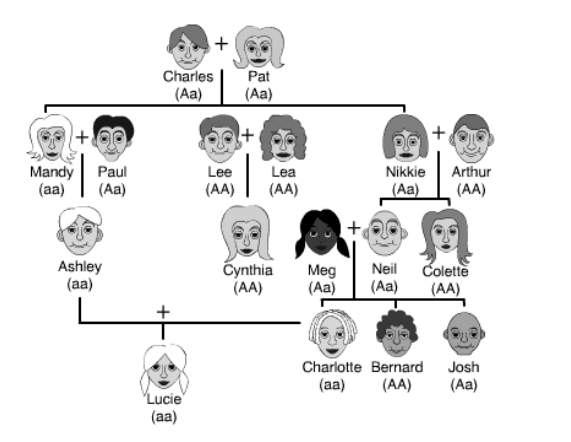
Both Charles and Pat are carriers of the albinism allele, but neither of them shows albino characteristics. What is the chance of Charles and Pat having a child with albinism?
What is the chance of Lee and Lea having a child with albinism?
Lee and Lea are both AA, so none of their children can be aa.
Origins of the Universe
Which property of a star is mainly determined by analysing the position of its absorption lines in the spectrum, compared with the same spectra on Earth?
The shift in the position of the lines (redshift) gives the recessional velocity, and Hubble's law turns that into a distance. (The pattern of the lines gives the composition.)
Which of the following models has the Sun at the centre of the Solar System, but not at the centre of the universe?
The heliocentric model put the Sun at the centre of the whole universe. In the modern Big Bang model the Sun is the centre of our Solar System only.
Which of the following describes the fundamental process by which a main-sequence star like our Sun generates energy?
Which of the following do scientists believe causes the accelerating expansion of the universe?
Which stellar remnant is extremely dense, has a mass greater than about 3 solar masses, and has gravity so strong that even light cannot escape?
Which stellar remnant is the likely fate of Tau Ceti, a single star in the constellation Cetus, similar to the Sun but with about 78% of its mass?
Which elements were the most abundant in the early universe, immediately after the Big Bang?
Section B: Short answer
Question 1 (6 marks)
In a Year 10 Science experiment, students rolled a cart down a ramp and collected the following data:
| Time (s) | 0.0 | 2.0 | 4.0 | 6.0 | 8.0 | 10 | 12 |
|---|---|---|---|---|---|---|---|
| Displacement down the ramp (cm) | 0 | 4 | 15 | 37 | 65 | 103 | 147 |
Plot a displacement–time graph for the data on graph paper, with a curved line of best fit. Describe your graph, then compare.
- Data points plotted correctly, with time (s) on the horizontal axis and displacement (cm) on the vertical axis (1 mark).
- A smooth curved trendline that gets steeper over time (1 mark).
Calculate the magnitude of the average velocity of the cart between 4.0 and 6.0 seconds.
vav = Δx / Δt = (37 − 15) ÷ 2 (1 mark) = 11 cm/s (1 mark).
Is the cart accelerating? Describe how the graph shows this.
Yes (1 mark). The trendline curves upwards: its gradient (the velocity) increases (1 mark).
Question 2 (8 marks)
The graph below shows the velocity of a model airplane travelling north.
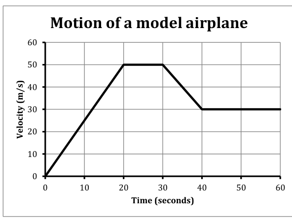
Calculate the acceleration of the airplane from t = 30 s to t = 40 s.
Magnitude: m/s2, direction:
a = gradient = rise ÷ run = (30 − 50) ÷ (40 − 30) (1 mark) = −2.0 m/s2 (1 mark). The negative sign means it is directed south (1 mark).
Calculate the distance travelled in the first 20 seconds.
distance = area = ½ × b × h = ½ × 20 × 50 (1 mark) = 500 m (1 mark).
A short time later, the airplane, travelling north at 50 m/s, turns east and continues travelling at 50 m/s. Has the airplane accelerated? Explain your reasoning.
Yes (1 mark). Its direction has changed (1 mark), so its velocity has changed, which means it has accelerated (1 mark).
Question 3 (3 marks)
Newton's second law of motion describes how the mass of an object affects the way it moves when acted on by one or more forces.
If the acceleration of a 500 g toy car is 6.0 m/s2 when it is pushed along a floor, calculate the net force acting on it.
F = ma = 0.500 × 6.0 (1 mark) = 3.0 N (1 mark).
If the same force was applied to a toy car with a mass of 10 kg, would the magnitude (size) of the acceleration be larger or smaller?
Question 4 (4 marks)
Ken was driving to the golf course with his golf bag on the back seat behind him. He braked suddenly to avoid a dog. Ken and the car came to a stop, but the golf clubs, which weren't secured to the seat, flew forward and hit Ken in the back of the head.
The golf clubs hitting Ken can be explained by one of Newton's laws of motion. Identify and define the relevant law.
Newton's first law (of motion) (1 mark).
An object maintains constant motion unless it is acted on by an unbalanced force (1 mark).
Use this law to explain why the golf clubs hit Ken in the back of the head.
There was no unbalanced force on the golf clubs (1 mark), so they maintained their constant motion (kept moving forward) while the car stopped (1 mark).
Question 5 (4 marks)
The table shows the percentage of each base in the DNA of three different organisms.
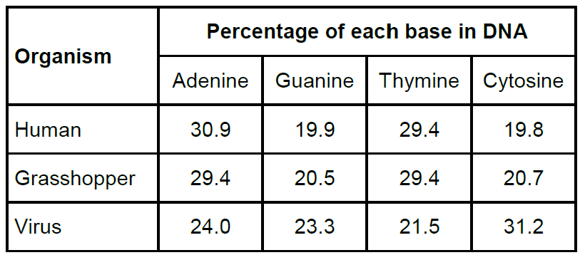
Use evidence from the table to explain the "base pairing rule" of DNA structure.
Adenine in one strand pairs with thymine in the other, while cytosine pairs with guanine (1 mark).
The table supports this, as the percentages of A and T, and of C and G, are very similar in each species (1 mark).
Humans and grasshoppers have very similar percentages of each base in their DNA, but they are very different organisms. Explain how this is possible.
Even though the percentages of the bases are similar, the order (sequence) of the bases is different, so the two species have different genes (1 mark), which results in different traits (1 mark).
Question 6 (2 marks)
The microscope image below shows some cells in the root tip of an onion plant.
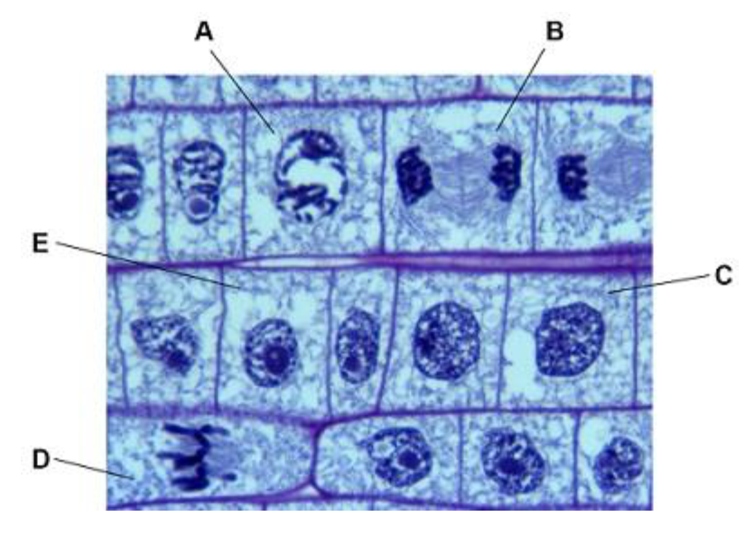
Which cell is not dividing by mitosis? Give evidence from the image to justify your answer.
Cell C (1 mark). Its nucleus is intact and there are no visible chromosomes, showing the cell is in interphase (1 mark).
Question 7 (2 marks)
Two short-tailed (Manx) cats are bred together. They produce two kittens with long tails, five with short tails, and two without any tails.
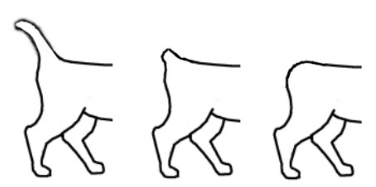
Is this inheritance pattern complete dominance or incomplete dominance?
Explain your choice.
There are three phenotypes in the offspring, with one (short tail) being intermediate between the other two.
Question 8 (6 marks)
In 1866, Gregor Mendel published the results of his investigations into inheritance in garden pea plants. The diagram shows the results of one investigation with purple-flowered and white-flowered pea plants.
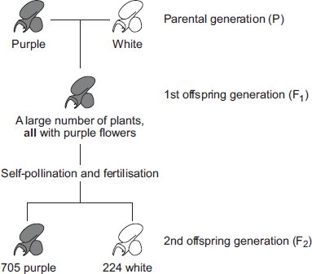
Explain the difference between dominant and recessive traits, using evidence from the diagram.
Any three of:
- Dominant traits need only one copy of an allele to be expressed (1 mark).
- Recessive traits need two copies of the allele to be expressed (1 mark).
- In the diagram, purple flowers are dominant to white (1 mark).
- The purple flowers in the F1 generation have different alleles but are purple, proving that purple is dominant (1 mark).
Is each plant homozygous or heterozygous?
| Plant | Homozygous or heterozygous? |
|---|---|
| Purple-flowered plant in the P generation | |
| White-flowered plant in the P generation | |
| Purple-flowered plant in the F1 generation |
Question 9 (4 marks)
Using fossil evidence, scientists have reconstructed the skulls of human-like species that lived millions of years ago. The images compare the reconstructed skull of the extinct Australopithecus afarensis with the skull of modern Homo sapiens.
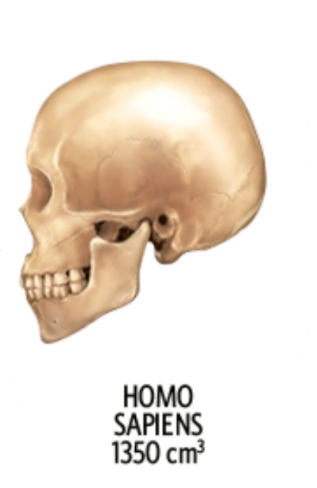
What is a fossil?
Any preserved evidence of past life.
How do fossils provide evidence for evolution?
Fossils show what common ancestors looked like, which helps us understand how species may have changed over time.
Outline one major difference between the skulls. Explain how this difference might have created an evolutionary disadvantage for Australopithecus afarensis.
The Homo sapiens skull (brain case) is much bigger than that of Australopithecus afarensis (1 mark).
This gives space for a larger brain, allowing advanced knowledge and skills such as language and tool-making, which A. afarensis lacked (1 mark).
Question 10 (3 marks)
How long does it take light to travel from the Sun to Jupiter, given that the Jupiter–Sun distance is 776 000 000 km and the speed of light is 300 000 km/s? Give units for your answer.
t =
t = d / v = 776 000 000 ÷ 300 000 (1 mark) = 2587 (1 mark) seconds (1 mark). 43 minutes is also accepted, as long as the units match the working.
Question 11 (2 marks)
The life cycle of a star depends on its mass. Match the letter from each box in the diagram to the correct term.
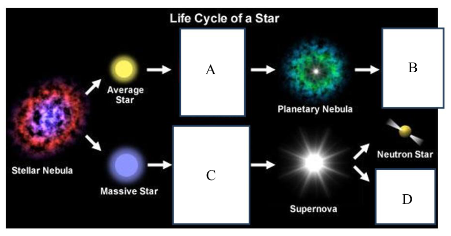
Box A:
Box B:
Box C:
Box D:
Question 12 (5 marks)
Stars can be classified by their apparent magnitude and their absolute magnitude.
Explain the difference between absolute and apparent magnitude.
Absolute magnitude measures the actual amount of light (energy, brightness) produced by a star (1 mark).
Apparent magnitude is the amount of light (brightness) seen when the star is viewed from Earth (1 mark).
Alpha Centauri A, in the constellation Centaurus, has apparent magnitude −0.01 and absolute magnitude +4.34. Beta Centauri, in the same constellation, has apparent magnitude +0.60 and absolute magnitude −5.43.
Which star intrinsically produces more light?
Which star would you expect to be closer to Earth? Explain your reasoning.
Alpha Centauri A (1 mark). It appears bright from Earth but actually produces much less light, so it must be close (1 mark).
Question 13 (6 marks)
Evidence for the Big Bang includes the amount of helium in the universe, the redshift of galaxies and the detection of the cosmic microwave background (CMB) radiation.
Explain why the light from distant galaxies is always redshifted.
Distant galaxies are moving away from us (1 mark). The light reaching us is stretched: it has a longer wavelength (lower frequency) (1 mark).
If light from distant galaxies is always redshifted, how is it possible for stars in these galaxies to appear blue?
Hot stars produce blue (high-frequency) light (1 mark). Even when that light is redshifted, they can still appear blue, or still emit blue wavelengths (1 mark).
Where in the universe can CMB radiation be detected?
In all directions: everywhere.
What happened in the early universe that allowed the CMB radiation to travel freely?
The universe cooled down enough. OR: protons and electrons combined to form (neutral) hydrogen atoms.